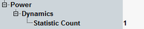

The following parameters configure the power settings of the NB-IoT NPRACH measurement.

Defines the number of measurement intervals per measurement cycle (statistics cycle, single-shot measurement). This value is also relevant for continuous measurements, because the averaging procedures depend on the statistic count.
For power dynamics measurements, the measurement interval is completed when the R&S CMW has measured one preamble plus the preceding and the following power OFF time.
The measurement provides independent statistic counts for modulation results and power dynamics results. In single-shot mode and with a shorter modulation statistic count, the modulation evaluation is stopped while the R&S CMW still continues providing new power dynamics results.
Remote command: